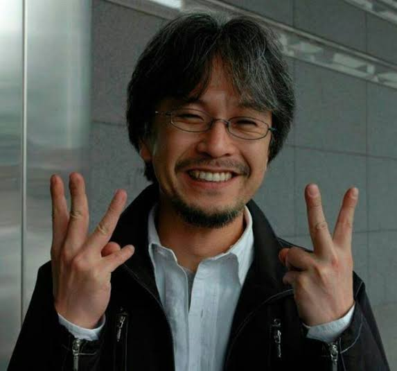

Author
Eiichiro Oda

Eiichiro Oda (Japanese: 尾田 栄一郎, Hepburn: Oda Eiichirō, born January 1, 1975) is a Japanese manga artist and the creator of the series One Piece. With more than 516.6 million tankōbon copies in circulation worldwide, One Piece is both the best-selling manga in history and the best-selling comic series printed in volume, in turn making Oda one of the best-selling fiction authors. The series' popularity resulted in Oda being named one of the manga artists that changed the history of manga. Eiichiro Oda has been married to Chiaki Inaba (稲葉ちあき, Inaba Chiaki), a former model and actress, since November 7, 2004. Oda and Inaba have had two daughters, the eldest was born in mid-2006 and the youngest in 2009.
Early life
Eiichiro Oda was born on January 1, 1975 in Kumamoto, Japan. At the age of four he resolved to become a manga artist in order to avoid having to get a "real job". His biggest influence is Akira Toriyama and his series Dragon Ball. He recalls that his interest in pirates was probably sparked by the popular TV animation series titled Vicky the Viking. He submitted a character named Pandaman for Yudetamago's classic wrestling manga Kinnikuman. Pandaman was not only used in a chapter of the manga but would later return as a recurring cameo character in Oda's own works.More Details
Pen name :- Tsukihimizu Kikondo (月火水 木金土) used for his entry in the 44th Tezuka AwardOccupation :- Manga artist
Years active :- 1992–present
Notable works :- One Piece
Notable awards :- Grand Prize at 41st Japan Cartoonists Association Award